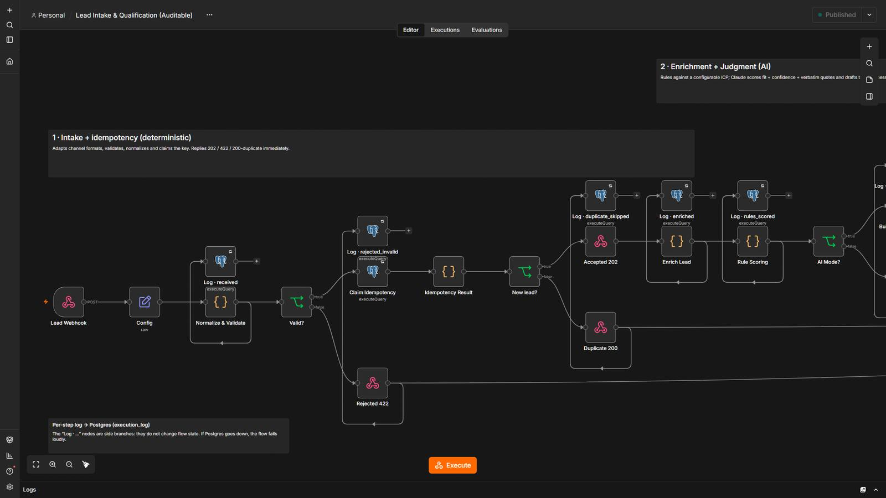
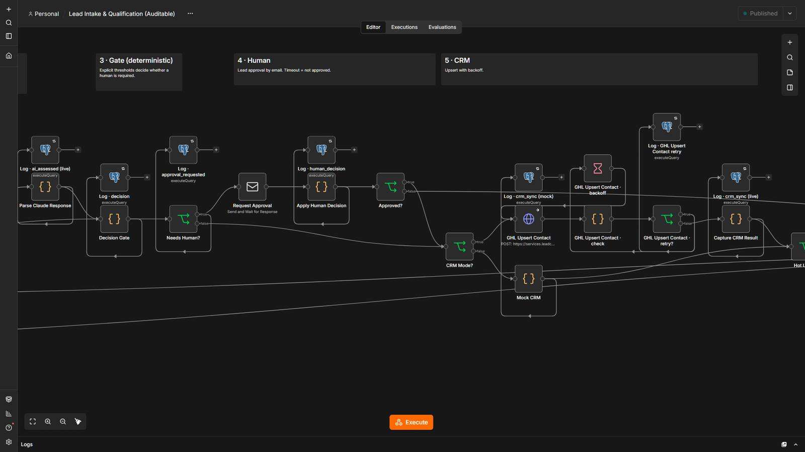
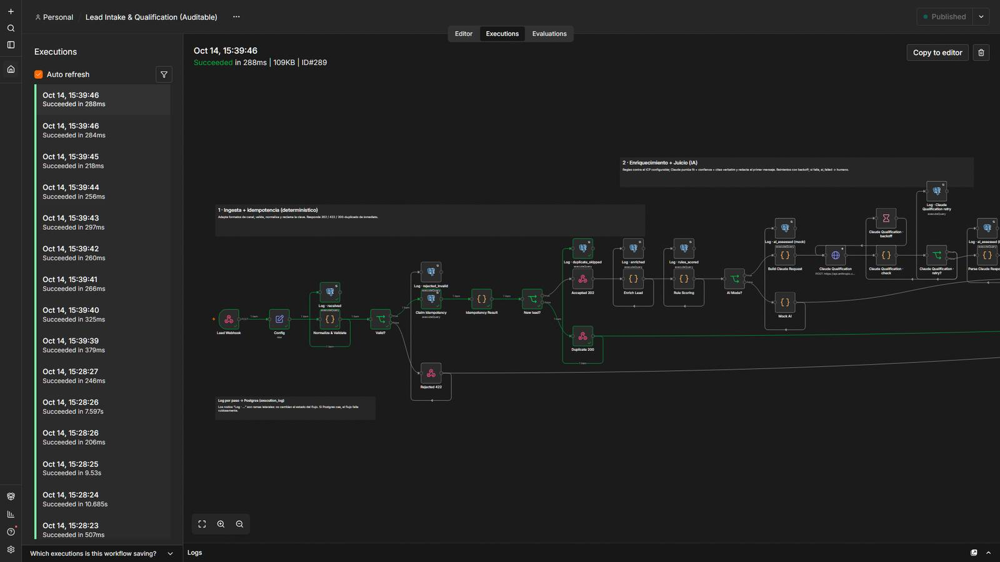

Qualify every new lead in minutes, with a person approving the first message.
A form lead is validated, de-duplicated, enriched and scored by rules; AI only judges what rules can’t. A sales rep approves the first message by email, and a Monday report comes straight from SQL.
5 steps, and who decides each one.
- Code decides
Validate & de-duplicate
One lead id never runs twice.
- Code decides
Score against your ICP
Deterministic rules kept in config.
- AI reads
Judge the edge cases
AI assesses what rules cannot. Hard rules run first.
- A person
Rep approves
Send-and-wait email: nothing reaches the lead without an explicit yes.
- Code decides
CRM + evidence
Contact created with the right stage and one JSON evidence file per lead.
2 workflows
Lead Intake & Qualification
A form lead arrives, is validated, de-duplicated, enriched and scored; a sales rep approves the first message before anything reaches the lead.
Step by step
- Validates and normalizes the payload; one lead id never runs twice (idempotency key claimed atomically).
- Deterministic rules score the lead against the ICP in config; AI (mock) only judges what rules cannot.
- Round-robin assignment of a sales rep (atomic Postgres sequence).
- The rep approves the first message by email (Send-and-Wait). Nothing is sent without an explicit yes.
- Creates or updates the contact in the CRM with the right stage; writes one JSON evidence file per lead.
Weekly Lead Report
Monday report built from the lead outcomes stored in Postgres.
Step by step
- Runs on a Monday schedule or on demand.
- Figures come from SQL over the lead outcomes table.
- Sends the report by email.
The system in n8n.
Screenshots of the actual editor and of a real execution, from the local test environment. Click one to open it full size.





